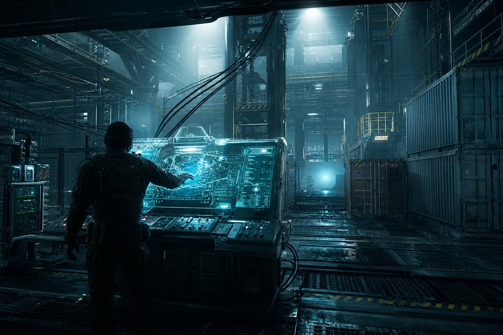
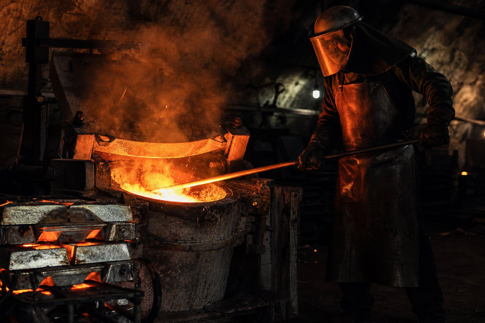
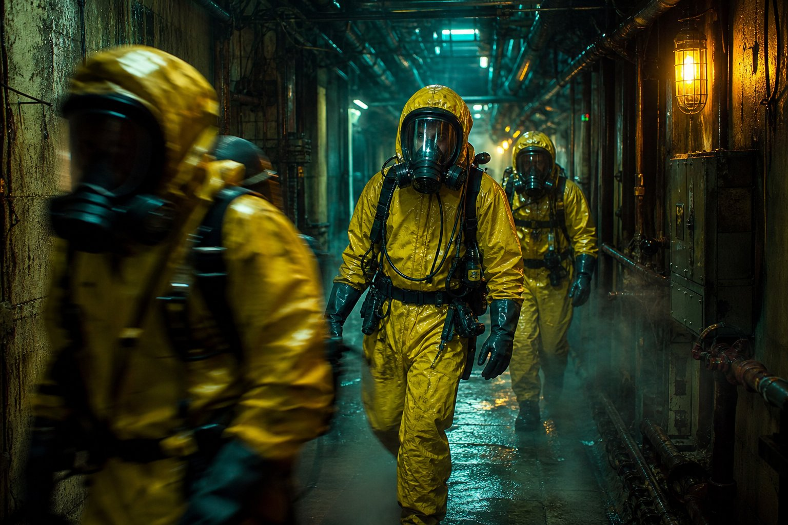

1. Supply Drops 2.0 en bref
Supplies Drops 2.0 est le rework saisonnier du mode Supplies Drops, arrivé avec le festival Biohazard & Bountiful Autumn Festival annoncé le 24 septembre 2026. C’est le mode le plus rentable du jeu pour qui sait le jouer, parce qu’il inverse entièrement l’économie du risque. Officiel
| Caractéristique | Valeur | Conséquence pratique |
|---|---|---|
| Type | Co-op décontracté, PvPvE | On joue pour les objectifs, pas pour survivre |
| Équipement | Entièrement fourni par le système | Votre stuff et votre stash ne sont pas en jeu |
| Réapparitions | Illimitées | Un mort est un délai, pas une perte |
| Récompense | Caisse d’équipe + caisse personnelle | Seul le contenu de la caisse est réglé |
| Progression | Caisse de niveau 1 → 5 | Chaque niveau ajoute des rangées de stockage |
| Objectifs | Terminaux standard + un terminal confidentiel | La densité d’XP est entièrement dans les terminaux |
| Débloqué | Smelter au niveau 3 | Conversion d %} |
La règle qui décide de tout : ne quittez pas avant la fin
Les récompenses sont payées quand le raid se termine. Quitter le mode en cours de route vide votre progression et transforme vos dépôts en rien. Les respawns illimités ne sont pas une permission de cash out au milieu du match. Comptez environ 10 à 12 minutes de raid et gardez l’onglet du timer sous les yeux. Officiel
2. La caisse de récompense : cinq niveaux
En Supplies Drops 2.0, on ne « sort » pas un sac à dos de loot. On remplit deux caisses : une Caisse de récompense d’équipe partagée et une Caisse de récompense personnelle. Le nombre de rangées de chaque caisse est la limite stricte de ce que vous conservez, et la seule façon d’ajouter des rangées pendant le raid est de monter le niveau de la caisse. Officiel
| Niveau | Ce que vous gagnez | Effet concret | Priorité |
|---|---|---|---|
| Niveau 1 | 4 rangées de départ | État initial de la caisse d’équipe | Base |
| Niveau 2 | +1 rangée à la caisse d’équipe | Plus de volume collectif | Haute |
| Niveau 3 | Débloque le Smelter | Conversion illimitée des objets violets et inférieurs | Haute — c’est le meilleur palier |
| Niveau 4 | +1 rangée à la caisse d’équipe | Deuxième extension collective | Moyenne |
| Niveau 5 | +1 rangée à la caisse d’équipe et à la caisse personnelle | Seul niveau qui fait grandir votre part individuelle | Maximale |
Traitez le niveau 5 comme l’objectif du raid
Trois des cinq niveaux étendent directement votre capacité, et le dernier est le seul à agrandir votre part personnelle. Une équipe qui plafonne au niveau 3 laisse deux rangées d’équipe et une rangée personnelle sur la table — c’est une part considérable de la valeur réglée qui disparaît. L’XP de caisse vient de trois sources : fouiller des conteneurs, éliminer des joueurs, et interagir avec les terminaux. Les terminaux sont de loin les plus denses en XP. Officiel

3. Les deux types de terminaux
Ce sont eux qui définissent le rythme du raid, et ils se traitent de façon opposée. Officiel
Terminal standard
Chaque équipe peut interagir avec chaque terminal une seule fois, et chaque interaction rapporte une petite quantité d’XP de caisse. Le montant est fixe, le plafond est par équipe : c’est une course.
- Faites-les tôt. Le total est plafonné, donc le dernier arrivé n’y gagne rien.
- Divisez l’équipe en deux. Deux binômes sur des côtés opposés de la carte doublent votre ingestion d’XP et vous révèlent les positions ennemies plus tôt.
- Ne les traitez pas comme un objectif à défendre. Vous les activez et vous repartez.
Terminal confidentiel
Il n’existe qu’un seul terminal confidentiel sur la carte entière. Après interaction, l’équipe doit rester et le défendre pendant la durée du chronomètre, et les autres équipes peuvent contester. La sécurisation rapporte une grosse quantité d’XP de caisse, assez à sauter un niveau à elle seule.
- Ne l’activez pas en arrivant. Déployez-vous, nettoyez les angles de tir, puis déclenchez : l’activation est ce qui annonce votre position à toute la carte.
- Tenez les angles, pas le terminal. Avec des réapparitions illimitées, sacrifier des corps pour protéger le point est un échange gagnant.
- Attendez-vous à de la compagnie en fin de raid. C’est la plus grosse source d’XP de la carte : les meilleures équipes y convergent en milieu et fin de raid, au moment où la fréquence des airdrops monte aussi.
4. Le Smelter : votre multiplicateur de loot au niveau 3
Lorsque la caisse atteint le niveau 3, le Smelter se débloque. La note officielle est explicite : « les joueurs peuvent l’utiliser pour fondre des objets de qualité Violette ou inférieure en nouveaux objets, sans limite d’usage ». Officiel

La clause sans limite d’usage est celle que la plupart des équipes ignorent. Elle a deux conséquences : elle transforme le bruit de fond de vos butins (verts, bleus, violets) en tickets de tirage, et comme il n’y a pas de limite, il n’y a aucune raison de laisser le four inactif une fois ouvert.
- La boucle pratique : dès le niveau 3, fais passer au Smelter chaque objet violet ou inférieur dont tu n’as pas besoin, au lieu de le déposer tel quel dans la caisse.
- C’est la même mécanique que le festival : Trash to Treasure est le pendant événementiel du Smelter du mode. L’habitude paie sur les deux.
- Priorité. Le Smelter est un excellent motif pour viser le niveau 3 vite : une caisse qui ne fait que remplir des verts bruts gaspille le meilleur outil de conversion du mode.
Ce qu’on sait des seuils — et ce qu’on ne sait pas
Des seuils de rendement du Smelter circulent sur Reddit, avec des tables de quantités et de probabilités observées par les joueurs. Ce ne sont pas des données publiées par l’éditeur et les résultats sont explicitement aléatoires : la note officielle parle d’une « chance » d’obtenir le Prototype Calculation Module, pas d’une garantie. Considérez ces chiffres comme des observations de terrain, jamais comme des garanties de rendement. Communauté
5. Airdrops, IA blindée et rythme du raid
Le rework 2.0 a modifié plusieurs paramètres du mode. Ce sont des leviers concrets si on sait qu’ils existent. Officiel
| Modification | Effet | Comment l’exploiter |
|---|---|---|
| Valeur du pass et du loot augmentée | Chaque raid vaut plus qu’en Supplies Drops S6 | Jouez le raid complet, ne sortez pas au premier tour |
| Temps de réapparition croissant | Les morts du début sont presque gratuits, ceux de la fin coûtent cher | jouez large en ouverture, resserrez une fois le terminal confidentiel lancé |
| Fréquence des airdrops en hausse | Les drops se concentrent en milieu et fin de raid | Gardez votre vigilance de carte pour la seconde moitié |
| Unités IA lourdement blindées | Ce ne sont pas des kills gratuits ; il faut de la pénétration | Adaptez votre niveau Pierce à leur blindage |
| Annonces de kill et d’XP | Informations audio sur les événements | Utilisez-les pour suivre la phase du raid |
| Numéros d’équipe et annonces vocales | Repérage instantané des coéquipiers | Communiquez moins au micro, l’information est déjà là |
L’erreur classique : videz votre magazine sur une IA blindée
Ces unités apparaissent à un moment où la contest du terminal va commencer. Gaspiller tout votre chargeur sur une IA blindée à la mauvaise entrée du terminal, c’est perdre le point et le temps de réapparition d’un coup. Emportez assez de pénétration, mais tenez-vous en réserve pour le contest. Officiel
6. Stratégie d’équipe
Comme le loadout est fourni et les réapparitions illimitées, Supplies Drops 2.0 inverse la logique d’extraction : vous ne risquez rien, donc il n’y a aucune raison de jouer prudent. Officiel
- Répartissez les rôles au lancement. Deux joueurs balaient les terminaux standard et ouvrent les conteneurs ; deux autres se positionnent vers le terminal confidentiel. Vous convergez pour la contest.
- Butez sur les objectifs, pas sur la survie. Votre stash n’est pas en jeu. Échangez agressivement pour taguer les terminaux et tenir le point confidentiel.
- Portez de la pénétration pour les IA blindées. Le match se joue sur le Pierce Level de vos munitions contre leur blindage.
- Poussez le niveau 5 avant de relâcher. Le dernier niveau est le seul qui ouvre une ligne à votre caisse personnelle ; tant que l’équipe tient et que le raid est jeune, continuez à alimenter la caisse.
- Traquez les airdrops en fin de raid. Leur fréquence monte dans la seconde moitié : c’est là que se trouve le volume de loot brut, une fois la caisse agrandie.
- Restez jusqu’au chronomètre zéro. Le règlement se fait à la fin. Sortir tôt vide tout.
7. Les erreurs qui coûtent le plus cher
Ce qu’il faut faire
- Balayer les terminaux standard dès l’ouverture, en parallèle sur deux axes de la carte.
- Traiter le terminal confidentiel comme un objectif à tenir, pas comme un conteneur.
- Atteindre le niveau 3 pour ouvrir le Smelter, puis ne jamais le laisser inactif.
- Utiliser la caisse personnelle pour les objets uniques et irremplaçables, la caisse d’équipe pour le surplus commun.
- Rester jusqu’à la fin du raid, même si votre part est déjà pleine.
Ce qu’il ne faut surtout pas faire
- Quitter le raid avant la fin : la progression est perdue, pas mise en attente.
- Porter en backpack ce qui doit être déposé : seul le contenu de la caisse est réglé.
- Jouer passivement en pensant à « survivre » : votre stuff n’est pas en jeu, le mode n’enregistre pas ce réflexe.
- Traiter le terminal confidentiel trop tôt et sans couverture.
- Changer d’itinéraire au milieu du raid sans prévenir : le mode est fait pour converger.
8. Trash to Treasure : le pendant événementiel du Smelter
Trash to Treasure est l’événement de fusion d’items d’Arena Breakout: Infinite. Au lancement, MoreFun a expliqué que « des fours apparaissent sur diverses cartes dans les zones Lockdown et Forbidden. Soumettez des objets divers en raid pour avoir une chance de recycler des déchets en trésor ! » Le flux en jeu tient en trois étapes : trouver le four, soumettre 3 objets divers, puis réclamer le résultat une fois la fusion terminée. Officiel
| Formule | Ingrédients | Résultat possible | Disponible (UTC+0) |
|---|---|---|---|
| Trash to Treasure | Personal Digital Assistant + Data Cable + Laptop | Prototype Calculation Module (collectible de valeur) | 29 oct. – 15 nov. 2026 |
La formule Halloween est close depuis le 15 novembre 2026
Au 17 novembre, cette formule n’est plus disponible. Ce qui reste accessible, c’est le Smelter du mode Supplies Drops 2.0, débloqué au niveau 3 de caisse, sans limite d’usage et fonctionnant sur les objets violets ou inférieurs. C’est le relais naturel pour ceux qui exploitaient la formule d’octobre. Officiel
Peut-on acheter les ingrédients pour courir au four ?
C’est exactement la question posée sur Reddit cette semaine. Les réponses des joueurs indiquent que les objets fournis par l’opérateur ne peuvent pas être fondus : on peut acheter des objets violets ou inférieurs, mais il faut qu’ils sortent d’un raid pour perdre leur marque « fourni ». MoreFun n’a pas confirmé ce point : traitez-le comme un test communautaire. Communauté
En revanche, une limite est explicitement documentée : dans la mise à jour en direct du 15 juillet 2026, MoreFun a interdit un objet supplémentaire « conformément aux autres objets divers de qualité Or », confirmant que les objets divers de qualité Or ne peuvent pas être emportés en raid. Tout ingrédient de qualité Or doit donc être trouvé dans le raid même où vous voulez l’utiliser. Officiel
- Faites sortir une fois les ingrédients de moindre qualité d’un raid, pour qu’ils perdent la marque « fourni ».
- Emportez-les ensuite dans chaque raid Lockdown ou Forbidden.
- Récupérez la pièce de qualité Or pendant le raid, puis filez droit vers un four.
- Les notes 2026 ne précisent pas la qualité de chaque ingrédient : vérifiez la couleur de l’objet dans le client avant de planifier.
9. Les modes infectés de la Saison 7
Supplies Drops 2.0 n’est pas le seul mode événementiel de la saison. La série Biohazard a introduit deux modes qui partagent les mêmes objets d’événement. Officiel

Infected Area En cours
Depuis le 16 sept. 2026Un raid Tactique classique dans une zone occupée par des zombies mutants et des boss de classe Élite affaiblis. Le loot rouge de zone y est plus généreux, et les tickets Zombie No Man’s Land y droppent.
Zombie Endless En cours
Depuis le 16 sept. 2026Un mode à score cumulé où l’objectif est votre Merit. C’est le mode qui alimente le Merit Challenge, la piste la plus rentable de la saison : conversion en Koen ×3, jusqu’à 3 000 000 Koen par semaine.
Extermination Mission Hebdomadaire
Remise chaque lundi à 05:00 UTC+0Une piste hebdomadaire d’élimination d’infectés qui débouche sur la tenue Hazmat complète via les Supply Passes. Un équipement d’événement entier obtenu gratuitement n’est pas rare.
Trash to Treasure Terminé
29 oct. – 15 nov. 2026La formule événementielle du four : PDA + câble + portable, avec une chance d’obtenir le Prototype Calculation Module.
10. Ce que le mode rapporte vraiment
Il faut distinguer deux choses : ce que le mode donne directement, et ce qu’il alimente ailleurs. Officiel
- Directement : la caisse d’équipe et la caisse personnelle, réglées au changement de phase du raid, plus les objets convertis au Smelter à partir du niveau 3.
- En plus : le Merit Challenge est hebdomadaire et se joue en Zombie Endless, pas en Supplies Drops. C’est le plus gros chiffre de la saison, mais il vient d’un autre mode.
- Par ailleurs : les objets de la série Biohazard et les Zombies No Man’s Land Passes tombent en Infected Area, pas en Supplies Drops.
- En pratique : Supplies Drops 2.0 est le mode où votre équipement ne risque rien. C’est le moment idéal pour “tester” un kit ou apprendre une carte, et le mode le plus stable en Koen brut.
Ce que le mode n’est pas
Supplies Drops 2.0 n’est pas le mode Hostile Sector, pas l’arbre de maîtrise, et pas un système de Secure Case. C’est un mode événementiel à durée limitée, qui a déjà tourné une fois en S6 et tourne en S7 : il n’est pas garanti qu’il sera présent à la prochaine saison. Officiel
11. Sources
Officiel
- Biohazard & Bountiful Autumn Festival — annonce du 24 septembre 2026 : progression de la caisse à 5 niveaux, types de terminaux,déblocage du Smelter, airdrops, IA blindée, annonces de kill et d’XP. x.com/ArenaBreakoutPC (nouvel onglet)
- Live Update du 27 octobre 2026 — formule Trash to Treasure, emplacement des fours en Lockdown et Forbidden Zone, interdiction des objets divers de qualité Or (patch du 15 juillet 2026). store.steampowered.com (nouvel onglet)
- Notes de la Saison 7 — Utopia — 15 septembre 2026 : modes Infected Area et Zombie Endless, règles d’arme et changements d’équilibre. store.steampowered.com (nouvel onglet)
Communautaire
- timesaver.gg — Supplies Drops 2.0 Guide — ordre de priorité des objectifs, répartition des rôles, hiérarchie de la caisse, pièges du mode. timesaver.gg (nouvel onglet)
- overgear.com — Supply Drops — règles d’origine du mode : pass d’entrée ou Koen, caisses personnelles et d’équipe, airdrops, dog tags. overgear.com (nouvel onglet)
- gamers.wiki — Arena Breakout: Infinite — règles du mode d’origine (niveau 6 requis, 300 000 Koen d’entrée) et usage des caisses. gamers.wiki (nouvel onglet)
- r/ArenaBreakoutInfinite — fil « Smelter PSA » (seuils observés), fil sur les objets fournis non fondables, discussions sur la répartition des gains entre caisses personnelle et d’équipe. reddit.com (nouvel onglet)
Non confirmé
- Les seuils et probabilités du Smelter rapportés sur Reddit sont des observations de joueurs, jamais publiées par l’éditeur ; les résultats sont aléatoires par conception.
- Le fait que les objets fournis par l’opérateur ne puissent pas être fondus repose sur des tests communautaires. Seule l’interdiction des objets divers de qualité Or est explicitement documentée dans les correctifs.
- Le tableau de points par placement (+3 / +1 / 0 / −1 / −1 en Warlord) est une reconstruction communautaire à partir de l’édition précédente, pas une grille publiée par MoreFun.